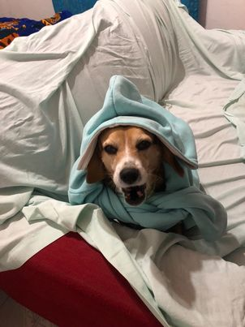
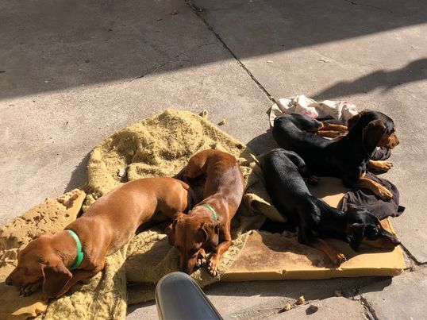
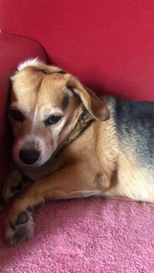

La Vaca que queria ser "Perro Salchicha"
Había una vez una pequeña casa con un jardín muy acogedor donde vivían tres adorables perros. Los dos primeros eran Pacheco y Fiona, dos encantadores perros Eran inseparables y compartían aventuras todos los días. Pacheco era valiente y siempre estaba dispuesto a explorar nuevos lugares, mientras que Fiona era más tímida pero igualmente amorosa y leal.
Un día soleado, mientras Pacheco y Fiona jugaban en el jardín, escucharon un ladrido muy peculiar. Se asomaron a la cerca y, para su sorpresa, vieron a una majestuosa perrita dorada, con un pelaje brillante y una sonrisa contagiosa. Era Vaca Lola, una encantadora golden retriever que se creía ser un perrito de raza salchicha. Vaca Lola había sido rescatada por una familia amorosa, pero creció rodeada de los dos traviesos salchichas. Desde cachorra, pasaba la mayor parte del tiempo con ellos, imitando sus ladridos y hasta adoptando su forma de caminar, lo que le hacía creer que también era un perrito salchicha. A pesar de su tamaño mucho más grande y su contextura rellenita, Vaca Lola estaba convencida de que era parte de la pandilla.
Pacheco y Fiona encontraron adorable la peculiaridad de Vaca Lola y, en lugar de rechazarla, decidieron acogerla como su amiga. Juntos, formaron un equipo increíble y vivieron emocionantes aventuras en el jardín y más allá. Los tres perros eran la envidia de los otros animales de la vecindad por la estrecha amistad que compartían. Un día, mientras exploraban el bosque cercano, los tres amigos se encontraron con una familia de conejitos que necesitaba ayuda. Un pequeño conejito se había perdido, y su mamá estaba angustiada buscándolo. Sin pensarlo dos veces, Pacheco, Fiona y Vaca Lola se ofrecieron a ayudar. Gracias a su unión y trabajo en equipo, lograron encontrar al conejito perdido y reunirlo con su familia. Los conejitos, agradecidos, les ofrecieron una deliciosa merienda de zanahorias y lechuga. Pacheco, Fiona y Vaca Lola disfrutaron cada bocado mientras compartían risas y anécdotas. Desde aquel día, Pacheco, Fiona y Vaca Lola se convirtieron en los protectores del bosque, siempre dispuestos a ayudar a cualquier animal necesitado. Su fama se expandió por toda la vecindad, y todos los animales sabían que podían confiar en ellos. Con el tiempo, Vaca Lola dejó de preocuparse por ser diferente y aceptó su singularidad con orgullo. Aunque seguía pensando que era un perrito salchicha, se dio cuenta de que lo más importante era la amistad que compartía con Pacheco y Fiona, sin importar su tamaño o raza. Así, los tres amigos vivieron felices y emocionantes aventuras, demostrando que la verdadera amistad no tiene barreras y que cada uno de nosotros es único y especial a su manera